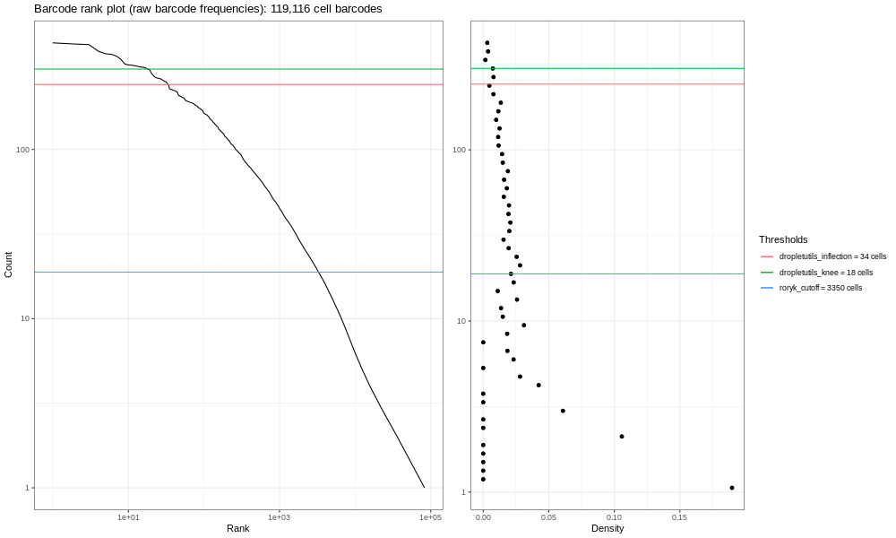
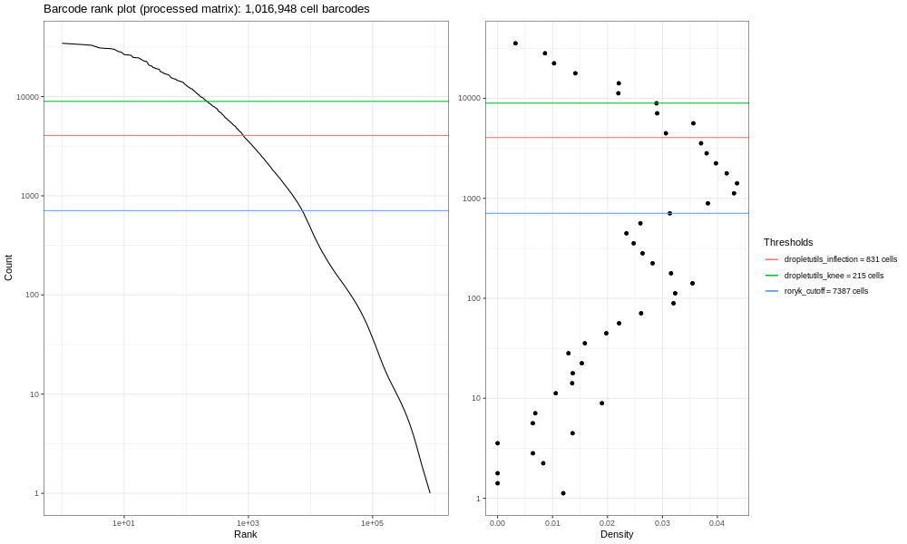
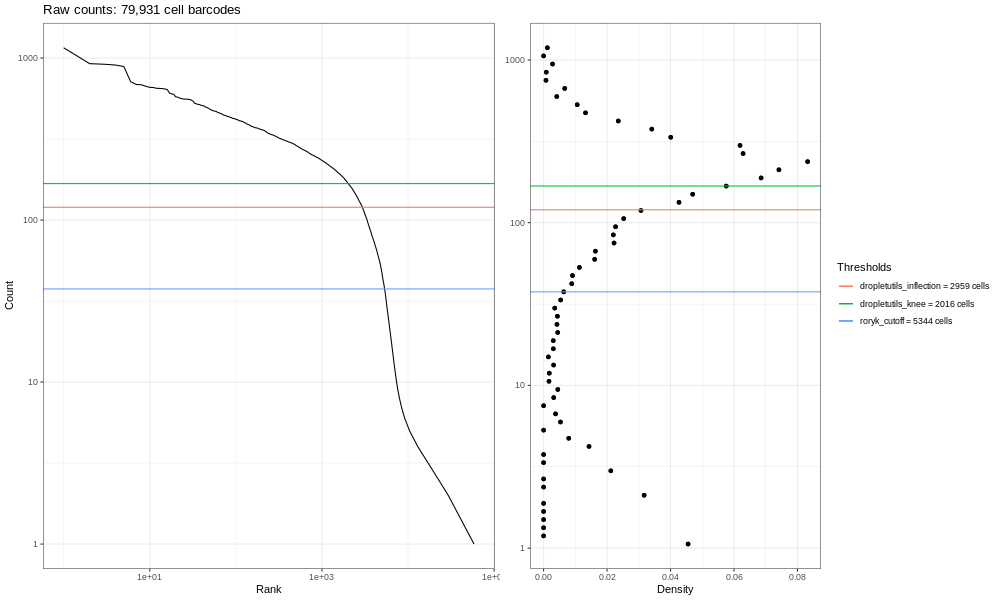
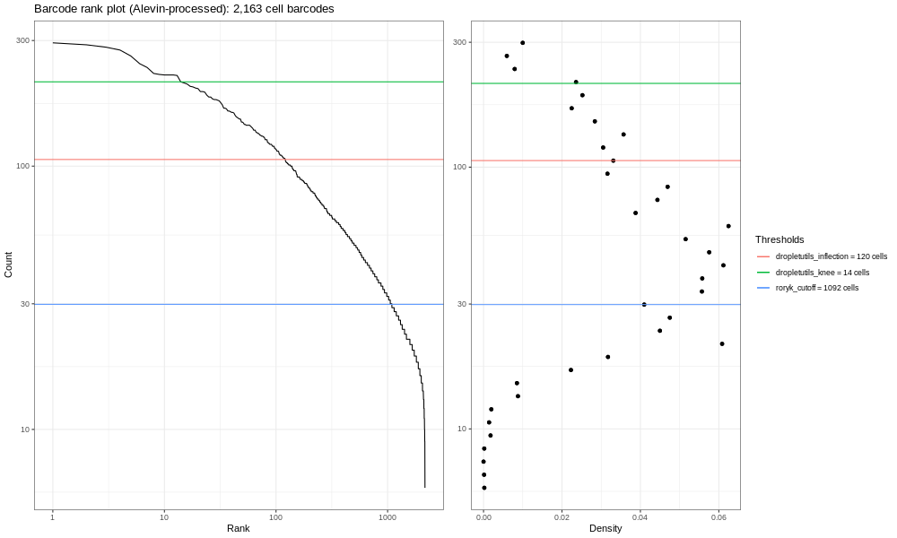
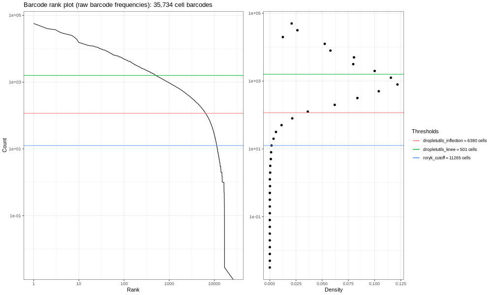
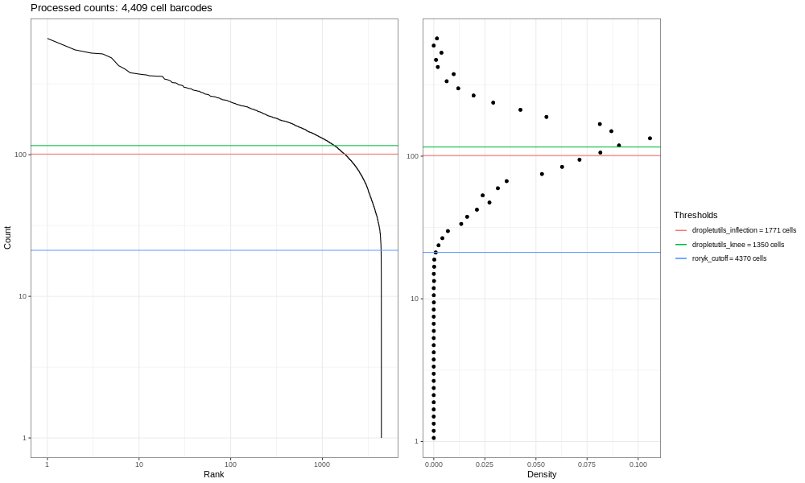
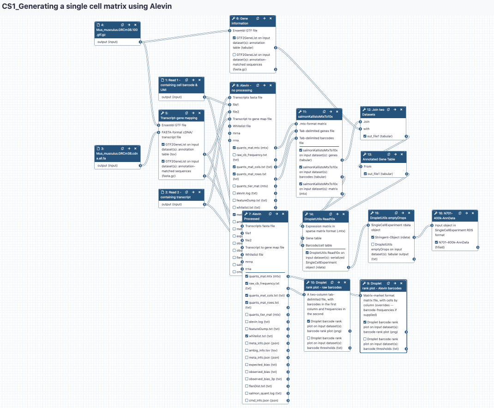

Generating a single cell matrix using Alevin
| Author(s) |
  Wendi Bacon Wendi Bacon
 Jonathan Manning Jonathan Manning
|
| Editor(s) |
 Helena Rasche Helena Rasche
|
| Tester(s) |
 Julia Jakiela Julia Jakiela
|
OverviewQuestions:Objectives:
I have some single cell FASTQ files I want to analyse. Where do I start?
Requirements:
Generate a cellxgene matrix for droplet-based single cell sequencing data
Interpret quality control (QC) plots to make informed decisions on cell thresholds
Find relevant information in GTF files for the particulars of their study, and include this in data matrix metadata
- Introduction to Galaxy Analyses
- Sequence analysis
- Quality Control: slides slides - tutorial hands-on
- Mapping: slides slides - tutorial hands-on
- Transcriptomics
- An introduction to scRNA-seq data analysis: slides slides
- Understanding Barcodes: tutorial hands-on
Time estimation: 2 hoursSupporting Materials:Last modification: Oct 18, 2022
 Questions:
Questions:
Introduction
This tutorial will take you from raw FASTQ files to a cell x gene data matrix in AnnData format. What’s a data matrix, and what’s AnnData format? Well you’ll find out! Importantly, this is the first step in processing single cell data in order to start analysing it. Currently you have a bunch of strings of ATGGGCTT etc. in your sequencing files, and what you need to know is how many cells you have and what genes appear in those cells. These steps are the most computationally heavy in the single cell world, as you’re starting with 100s of millions of reads, each with 4 lines of text. Later on in analysis, this data becomes simple gene counts such as ‘Cell A has 4 GAPDHs’, which is a lot easier to store! Because of this data overload, we have downsampled the FASTQ files to speed up the analysis a bit. Saying that, you’re still having to map loads of reads to the massive murine genome, so get yourself a cup of coffee and prepare to analyse!
AgendaIn this tutorial, we will cover:
Generating a matrix
In this section, we will show you the principles of the initial phase of single-cell RNA-seq analysis: generating expression measures in a matrix. We’ll concentrate on droplet-based (rather than plate-based) methodology, since this is the process with most differences with respect to conventional approaches developed for bulk RNA-seq.
Droplet-based data consists of three components: cell barcodes, unique molecular identifiers (UMIs) and cDNA reads. To generate cell-wise quantifications we need to:
- Process cell barcodes, working out which ones correspond to ‘real’ cells, which to sequencing artefacts, and possibly correct any barcodes likely to be the product of sequencing errors by comparison to more frequent sequences.
- Map biological sequences to the reference genome or transcriptome.
- ‘De-duplicate’ using the UMIs.
This used to be a complex process involving multiple algorithms, or was performed with technology-specific methods (such as 10X’s ‘Cellranger’ tool) but is now much simpler thanks to the advent of a few new methods. When selecting methodology for your own work you should consider:
- STARsolo - a droplet-based scRNA-seq-specific variant of the popular genome alignment method STAR. Produces results very close to those of Cellranger (which itself uses STAR under the hood).
- Kallisto/ bustools - developed by the originators of the transcriptome quantification method, Kallisto.
- Alevin - another transcriptome analysis method developed by the authors of the Salmon tool.
We’re going to use Alevin Srivastava et al. 2019 for demonstration purposes, but we do not endorse one method over another.
Get Data
We’ve provided you with some example data to play with, a small subset of the reads in a mouse dataset of fetal growth restriction Bacon et al. 2018 (see the study in Single Cell Expression Atlas here and the project submission here). This is a study using the Drop-seq chemistry, however this tutorial is almost identical to a 10x chemistry. We will point out the one tool parameter change you will need to run 10x samples. This data is not carefully curated, standard tutorial data - it’s real, it’s messy, it desperately needs filtering, it has background RNA running around, and most of all it will give you a chance to practice your analysis as if this data were yours.
Down-sampled reads and some associated annotation can be downloaded from Zenodo below, or you can import this example input history. How did I downsample these FASTQ files? Check out this history to find out! Additionally, to map your reads, you will need a transcriptome to align against (a FASTA) as well as the gene information for each transcript (a gtf) file. You can download these for your species of interest from Ensembl here. Additionally, these files are available in the above history as well as the Zenodo links below. Keep in mind, these are big files, so they may take a bit to import!
Hands-on: Data upload - Part 1
- Create a new history for this tutorial
Import the Experimental Design table, sequencing reads 1 & 2, the GTF and fasta files from Zenodo
https://zenodo.org/record/4574153/files/Experimental_Design.tabular https://zenodo.org/record/4574153/files/Mus_musculus.GRCm38.100.gtf.gff https://zenodo.org/record/4574153/files/Mus_musculus.GRCm38.cdna.all.fa.fasta https://zenodo.org/record/4574153/files/SLX-7632.TAAGGCGA.N701.s_1.r_1.fq-400k.fastq https://zenodo.org/record/4574153/files/SLX-7632.TAAGGCGA.N701.s_1.r_2.fq-400k.fastq
- Copy the link location
Open the Galaxy Upload Manager (galaxy-upload on the top-right of the tool panel)
- Select Paste/Fetch Data
Paste the link into the text field
Press Start
- Close the window
- Rename galaxy-pencil the datasets
QuestionHave a look at the files you now have in your history.
- Which of the FASTQ files do you think contains the barcode sequences?
- Given the chemistry this study should have, are the barcode/UMI reads the correct length?
- What is the ‘N701’ referring to?
- Read 1 (SLX-7632.TAAGGCGA.N701.s_1.r_1.fq-400k) contains the cell barcode and UMI because it is significantly shorter (indeed, 20 bp!) compared to the longer, r_2 transcript read. For ease, rename these files N701-Read1 and N701-Read2.
- You can see Read 1 is only 20 bp long, which for original Drop-Seq is 12 bp for cell barcode and 8 bp for UMI. This is correct! Be warned - 10x Chromium (and many technologies) change their chemistry over time, so particularly when you are accessing public data, you want to check and make sure you have your numbers correct!
- ‘N701’ is referring to an index read. This sample was run alongside 6 other samples, each denoted by an Illumina Nextera Index (N70X). Later, this will tell you batch information. If you look at the ‘Experimental Design’ file, you’ll see that the N701 sample was from a male wildtype neonatal thymus.
Generate a transcript to gene map
Gene-level, rather than transcript-level, quantification is standard in scRNA-seq, which means that the expression level of alternatively spliced RNA molecules are combined to create gene-level values. Droplet-based scRNA-seq techniques only sample one end each transcript, so lack the full-molecule coverage that would be required to accurately quantify different transcript isoforms.
To generate gene-level quantifications based on transcriptome quantification, Alevin and similar tools require a conversion between transcript and gene identifiers. We can derive a transcript-gene conversion from the gene annotations available in genome resources such as Ensembl. The transcripts in such a list need to match the ones we will use later to build a binary transcriptome index. If you were using spike-ins, you’d need to add these to the transcriptome and the transcript-gene mapping.
In your example data you will see the murine reference annotation as retrieved from Ensembl in GTF format. This annotation contains gene, exon, transcript and all sorts of other information on the sequences. We will use these to generate the transcript/ gene mapping by passing that information to a tool that extracts just the transcript identifiers we need.
QuestionWhich of the ‘attributes’ in the last column of the GTF files contains the transcript and gene identifiers?
The file is organised such that the last column (headed ‘Group’) contains a wealth of information in the format: attribute1 “information associated with attribute 1”;attribute2 “information associated with attribute 2” etc.
gene_id and transcript_id are each followed by “ensembl gene_id” and “ensembl transcript_id”
It’s now time to parse the GTF file using the rtracklayer package in R. This parsing will give us a conversion table with a list of transcript identifiers and their corresponding gene identifiers for counting. Additionally, because we will be generating our own binary index (more later!), we also need to input our FASTA so that it can be filtered to only contain transcriptome information found in the GTF.
Tools are frequently updated to new versions. Your Galaxy may have multiple versions of the same tool available. By default, you will be shown the latest version of the tool. This may NOT be the same tool used in the tutorial you are accessing. Furthermore, if you use a newer tool in one step, and try using an older tool in the next step… this may fail! To ensure you use the same tool versions of a given tutorial, use the Tutorial mode feature.
- Open your Galaxy server
- Click on the curriculum icon on the top menu, this will open the GTN inside Galaxy.
- Navigate to your tutorial
- Tool names in tutorials will be blue buttons that open the correct tool for you
- Note: this does not work for all tutorials (yet)
- You can click anywhere in the grey-ed out area outside of the tutorial box to return back to the Galaxy analytical interface

Hands-on: Generate a filtered FASTA and transcript-gene map
- GTF2GeneList Tool: toolshed.g2.bx.psu.edu/repos/ebi-gxa/gtf2gene_list/_ensembl_gtf2gene_list/1.52.0+galaxy0 with the following parameters:
- param-file “Ensembl GTF file”:
GTF file in the historygalaxy-history- “Feature type for which to derive annotation”:
transcript(Your sequences are transcript sequencing, so this is your starting point)- “Field to place first in output table”:
transcript_id(This is accessing the column you identified above!)- “Suppress header line in output?”:
Yes(The next tool (Alevin) does not expect a header)- “Comma-separated list of field names to extract from the GTF (default: use all fields)”:
transcript_id,gene_id(This calls the first column to be the transcript_id, and the second the gene_id. Thus, your key can turn transcripts into genes)- “Append version to transcript identifiers?”:
Yes(The Ensembl FASTA files usually have these, and since we need the FASTA transcriptome and the GTF gene information to work together, we need to append these!)- “Flag mitochondrial features?”:
No- “Provide a cDNA file for extracting annotations and/ or possible filtering?”:
Yes- param-file “FASTA-format cDNA/transcript file”:
FASTA file in your historygalaxy-history- “Annotation field to match with sequences”:
transcript_id- “Filter the cDNA file to match the annotations?”:
YesRename galaxy-pencil the annotation table to
Map- Rename galaxy-pencil the uncompressed filtered FASTA file to
Filtered FASTA
Generate a transcriptome index & quantify!
Alevin collapses the steps involved in dealing with dscRNA-seq into a single process. Such tools need to compare the sequences in your sample to a reference containing all the likely transcript sequences (a ‘transcriptome’). This will contain the biological transcript sequences known for a given species, and perhaps also technical sequences such as ‘spike ins’ if you have those.
To be able to search a transcriptome quickly, Alevin needs to convert the text (FASTA) format sequences into something it can search quickly, called an ‘index’. The index is in a binary rather than human-readable format, but allows fast lookup by Alevin. Because the types of biological and technical sequences we need to include in the index can vary between experiments, and because we often want to use the most up-to-date reference sequences from Ensembl or NCBI, we can end up re-making the indices quite often. Making these indices is time-consuming! Have a look at the uncompressed FASTA to see what it starts with.
We now have:
- Barcode/ UMI reads
- cDNA reads
- transcript/ gene mapping
- filtered FASTA
We can now run Alevin. In some public instances, Alevin won’t show up if you search for it. Instead, you may have to click the Single Cell tab at the left and scroll down to the Alevin tool. Alternatively, use Tutorial Mode as described above and you’ll easily navigate to all the tools, and their versions will all be the tried and tested ones of this tutorial. It’s often a good idea to check your tool versions. In this case the tutorial was built with Alevin Galaxy Version 1.5.1+galaxy0. To identify which version of a tool you are using. Select tool-versions ‘Versions’ and choose the appropriate version.
Hands-on: Running Alevin
Alevin Tool: toolshed.g2.bx.psu.edu/repos/bgruening/alevin/alevin/1.5.1+galaxy0
QuestionTry to fill in the parameters of Alevin using what you know!
The Salmon documentation on ‘Fragment Library Types’ and running the Alevin command is here: salmon.readthedocs.io/en/latest/library_type.html and salmon.readthedocs.io/en/latest/alevin.html. These links will help here, although keep in mind the image there is drawn with the RNA 5’ on top, whereas in this scRNA-seq protocol, the polyA is captured by its 3’ tail and thus effectively the bottom or reverse strand…)
- “Select a reference transcriptome from your history or use a built-in index?”:
Use one from the history
- You are going to generate the binary index using your filtered FASTA!
- param-file “Transcripts FASTA file”:
Filtered FASTA- “Single or paired-end reads?”:
Paired-end- param-file “file1”:
N701-Read1- param-file “file2”:
N701-Read2- “Specify the strandedness of the reads”:
Infer automatically (A)- “Protocol”:
DropSeq Single Cell protocol- param-file “Transcript to gene map file”:
Map- “Retrieve all output files”:
Yes- In “Optional commands”:
- “dumpFeatures”:
Yes- “dumpMTX”:
Yes
Comment: What if I'm running a 10x sample?The main parameter that needs changing for a 10X Chromium sample is the ‘Protocol’ parameter of Alevin. Just select the correct 10x Chemistry there instead.
This tool will take a while to run. Alevin produces many file outputs, not all of which we’ll use. You can refer to the Alevin documentation if you’re curious what they all are, but we’re most interested in is:
- the matrix itself (quants_mat.mtx.gz - the count by gene and cell)
- the row (cell/ barcode) identifiers (quants_mat_rows.txt) and
- the column (gene) labels (quants_mat_cols.txt).
This is the matrix market (MTX) format.
QuestionAfter you’ve run Alevin, galaxy-eye look through all the different files. Can you find:
- The Mapping Rate?
- How many cells are present in the matrix output?
- Inspect galaxy-eye the file param-file meta_info.json. You can see the mapping rate is a paltry
25.45%. This is a terrible mapping rate. Why might this be? Remember this was downsampled, and specifically by taking only the last 400,000 reads of the FASTQ file. The overall mapping rate of the file is more like 50%, which is still quite poor, but for early Drop-Seq samples and single-cell data in general, you might expect a slightly poorer mapping rate. 10x samples are much better these days! This is real data, not test data, after all!- Inspect galaxy-eye the file param-file ‘quants_mat_rows.txt’, and you can see it has
2163lines. The rows refer to the cells in the cell x gene matrix. According to this (rough) estimate, your sample has 2163 cells in it!
Warning: Warning!: Choose the appropriate input going forward!Make certain to use quants_mat.mtx.gz and NOT quants_tier.mtx.gz going forward.
congratulations Congratulations - you’ve made an expression matrix! We could almost stop here. But it’s sensible to do some basic QC, and one of the things we can do is look at a barcode rank plot.
Basic QC
The question we’re looking to answer here, is: “do we mostly have a single cell per droplet”? That’s what experimenters are normally aiming for, but it’s not entirely straightforward to get exactly one cell per droplet. Sometimes almost no cells make it into droplets, other times we have too many cells in each droplet. At a minimum, we should easily be able to distinguish droplets with cells from those without.
Hands-on: Generate a raw barcode QC plot
- Droplet barcode rank plot Tool: toolshed.g2.bx.psu.edu/repos/ebi-gxa/droplet_barcode_plot/_dropletBarcodePlot/1.6.1+galaxy2 with the following parameters:
- “Input MTX-format matrix?”:
No- param-file “A two-column tab-delimited file, with barcodes in the first column and frequencies in the second”:
raw_cb_frequencies.txt- “Label to place in plot title”:
Barcode rank plot (raw barcode frequencies)- Rename galaxy-pencil the image output
Barcode Plot - raw barcode frequencies

Now, the image generated here (400k) isn’t the most informative - but you are dealing with a fraction of the reads! If you run the total sample (so identical steps above, but with significantly more time!) you’d get the image below.

This is our own formulation of the barcode plot based on a discussion we had with community members. The left hand plots with the smooth lines are the main plots, showing the UMI counts for individual cell barcodes ranked from high to low. We expect a sharp drop-off between cell-containing droplets and ones that are empty or contain only cell debris. Now, this data is not an ideal dataset, so for perspective, in an ideal world with a very clean 10x run, data will look a bit more like the following taken from the lung atlas (see the study in Single Cell Expression Atlas here and the project submission here).

In that plot, you can see the clearer ‘knee’ bend, showing the cut-off between empty droplets and cell-containing droplets.
The right hand plots are density plots from the first one, and the thresholds are generated either using dropletUtils or by the method described in the discussion mentioned above. We could use any of these thresholds to select cells, assuming that anything with fewer counts is not a valid cell. By default, Alevin does something similar, and we can learn something about that by plotting just the barcodes Alevin retains.
Hands-on: Generate Alevin's barcode QC plot
- Droplet barcode rank plot Tool: toolshed.g2.bx.psu.edu/repos/ebi-gxa/droplet_barcode_plot/_dropletBarcodePlot/1.6.1+galaxy2 with the following parameters:
- “Input MTX-format matrix?”:
Yes- “Matrix-market format matrix file, with cells by column (overrides –barcode-frequencies if supplied)”:
quants_mat.mtx- “For use with –mtx-matrix: force interpretation of matrix to assume cells are by row, rather than by column (default)”:
Yes- “Label to place in plot title”:
Barcode rank plot (Alevin-processed)- Rename galaxy-pencil the image output
Barcode Plot - Alevin processed barcodes

And the full sample looks like:

And to round this off, here’s the lung atlas plot.

You should see a completely vertical drop-off where Alevin has trunctated the distribution (after excluding any cell barcode that had <10 UMI, Alevin then chose a threshold based off the curve and removed all barcodes with fewer UMIs).
In experiments with relatively simple characteristics, this ‘knee detection’ method works relatively well. But some populations (such as our sample!) present difficulties. For instance, sub-populations of small cells may not be distinguished from empty droplets based purely on counts by barcode. Some libraries produce multiple ‘knees’ for multiple sub-populations. The emptyDrops method has become a popular way of dealing with this. emptyDrops still retains barcodes with very high counts, but also adds in barcodes that can be statistically distinguished from the ambient profiles, even if total counts are similar. In order to ultimately run emptyDrops (or indeed, whatever tool you like that accomplishes biologically relevant thresholding), we first need to re-run Alevin, but prevent it from applying its own less than ideal thresholds.
To use emptyDrops effectively, we need to go back and re-run Alevin, stopping it from applying it’s own thresholds. Click the re-run icon galaxy-refresh on any Alevin output in your history, because almost every parameter is the same as before, except you need to change the following:
Generate an unprocessed matrix in a usable format
Hands-on: Stopping Alevin from thresholding
- Alevin Tool: toolshed.g2.bx.psu.edu/repos/bgruening/alevin/alevin/1.5.1+galaxy0 (Click re-run on the last Alevin output)
- “Optional commands”
- “keepCBFraction”: ‘1’ - i.e. keep them all!
- “freqThreshold”: ‘3’ - This will only remove cell barcodes with a frequency of less than 3, a low bar to pass but useful way of avoiding processing a bunch of almost certainly empty barcodes
- Expand one of the output datasets of the tool (by clicking on it)
- Click re-run galaxy-refresh the tool
This is useful if you want to run the tool again but with slightly different paramters, or if you just want to check which parameter setting you used.
QuestionHow many cells are in the output now?
22952cells are in the quants_mat_rows now! Far more than the Alevin-filtered2163. This needs some serious filtering with EmptyDrops!
Alevin outputs MTX format, which we can pass to the dropletUtils package and run emptyDrops. Unfortunately the matrix is in the wrong orientation for tools expecting files like those produced by 10X software (which dropletUtils does). We need to ‘transform’ the matrix such that cells are in columns and genes are in rows.
Warning: Be careful!Don’t mix up files from the different Alevin runs! Use the later run, which has higher numbers in the history!
Hands-on: Transform matrix
- salmonKallistoMtxTo10x Tool: toolshed.g2.bx.psu.edu/repos/ebi-gxa/salmon_kallisto_mtx_to_10x/_salmon_kallisto_mtx_to_10x/0.0.1+galaxy6 with the following parameters:
- param-file “.mtx-format matrix”:
quants_mat.mtx.gz(output of Alevin tool)- param-file “Tab-delimited genes file”:
quants_mat_cols.txt(output of Alevin tool)- param-file “Tab-delimited barcodes file”:
quants_mat_rows.txt(output of Alevin tool)- Rename galaxy-pencil ‘salmonKallistoMtxTo10x….:genes’ to
Gene table- Rename galaxy-pencil ‘salmonKallistoMtxTo10x….:barcodes’ to
Barcode table- Rename galaxy-pencil ‘salmonKallistoMtxTo10x….:matrix’ to
Matrix table
The output is a matrix in the correct orientation for the rest of our tools. However, our matrix is looking a bit sparse - for instance, click on Gene table. I don’t know about you, but I’d struggle to have a good biological discussion using only Ensembl gene_ids! What I’d really like is the more understandable ‘GAPDH’ or other gene acronym, as well as information on mitochondrial genes so that I can assess if my cells were stressed out or not. In order to prepare our data for emptyDrops, we’re going to combine this information into an object, and it’s easiest to add in that information now.
Adding in Gene metadata
QuestionWhere can we find this gene information?
Our old friend the GTF file!
QuestionWhich of the ‘attributes’ in the last column of that file contains the gene acronym?
gene_name
We’re now going to re-run galaxy-refresh the tool that extracts information from our GTF file.
Hands-on: Generate gene information
- GTF2GeneList Tool: toolshed.g2.bx.psu.edu/repos/ebi-gxa/gtf2gene_list/_ensembl_gtf2gene_list/1.52.0+galaxy0 with the following parameters:
- “Feature type for which to derive annotation”:
gene- “Field to place first in output table”:
gene_id- “Suppress header line in output?”:
Yes- “Comma-separated list of field names to extract from the GTF (default: use all fields)”:
gene_id,gene_name,mito- “Append version to transcript identifiers?”:
Yes- “Flag mitochondrial features?”:
Yes- note, this will auto-fill a bunch of acronyms for searching in the GTF for mitochondrial associated genes. This is good!- “Filter a FASTA-format cDNA file to match annotations?”:
No- we don’t need to, we’re done with the FASTA!- Check that the output file type is
tabular. If not, change the file type by clicking the ‘Edit attributes’galaxy-pencil on the dataset in the history (as if you were renaming the file.) Then clickDatatypesand type intabular. ClickChange datatype.)- Rename galaxy-pencil the annotation table to
Gene Information
Inspect galaxy-eye the Gene Information object in the history. Now you have made a new key for gene_id, with gene name and a column of mitochondrial information (false = not mitochondrial, true = mitochondrial). We need to add this information into the salmonKallistoMtxTo10x output ‘Gene table’. But we need to keep ‘Gene table’ in the same order, since it is referenced in the ‘Matrix table’ by row.
Hands-on: Combine MTX Gene Table with Gene Information
- Join two Datasets Tool: join1 with the following parameters:
- “Join”:
Gene Table- “Using column”:
Column: 1- “with”:
Gene Information- “and column”:
Column: 1- “Keep lines of first input that do not join with second input”:
Yes- “Keep lines of first input that are incomplete”:
Yes- “Fill empty columns”:
No- “Keep the header lines”:
NoIf you inspect galaxy-eye the object, you’ll see we have joined these tables and now have quite a few gene_id repeats. Let’s take those out, while keeping the order of the original ‘Gene Table’.
- Cut columns from a table Tool: Cut1 with the following parameters:
- “Cut columns”:
c1,c4,c5- “Delimited by”:
Tab- “From”: output of Join two Datasets tool
- Rename output
Annotated Gene Table
Inspect galaxy-eye your Annotated Gene Table. That’s more like it! You now have gene_id, gene_name, and mito. Now let’s get back to your journey to emptyDrops and sophisticated thresholding of empty droplets!
emptyDrops
emptyDrops Lun et al. 2019 works with a specific form of R object called a SingleCellExperiment. We need to convert our transformed MTX files into that form, using the DropletUtils Read10x tool:
Hands-on: Converting to SingleCellExperiment format
- DropletUtils Read10x Tool: toolshed.g2.bx.psu.edu/repos/ebi-gxa/dropletutils_read_10x/dropletutils_read_10x/1.0.4+galaxy0 with the following parameters:
- param-file “Expression matrix in sparse matrix format (.mtx)”:
Matrix table- param-file “Gene Table”:
Annotated Gene Table- param-file “Barcode/cell table”:
Barcode table- “Should metadata file be added?”:
No- Rename galaxy-pencil output:
SCE Object
Fantastic! Now that our matrix is combined into an object, specifically the SingleCellExperiment format, we can now run emptyDrops! Let’s get rid of those background droplets containing no cells!
Hands-on: Emptydrops
- DropletUtils emptyDrops Tool: toolshed.g2.bx.psu.edu/repos/ebi-gxa/dropletutils_empty_drops/dropletutils_empty_drops/1.0.4+galaxy0 with the following parameters:
- param-file “SingleCellExperiment rdata object”:
SCE Object- “Should barcodes estimated to have no cells be removed from the output object?”:
YesRename galaxy-pencil
serialised SingleCellExperimentoutput asEmptied-Object- Rename galaxy-pencil
tabular outputasEmptied-Tabular Output
QuestionHow many cell barcodes remain after the emptyDrops treatment? Why might that be?
If you click on the
Emptied-Objectin the galaxy-history history, the text in that window says37 barcodesor something similar to that - there is an element of random in the algorithm, so yours might differ slightly. Why is this so low?? And why might the number be different? Consider…is this a complete set of data?Remember this is a subsampled dataset. If you look carefully at the parameters of emptyDrops, you’ll see it set a minimum threshold at 100 UMI. If you look at the barcode plots above for the 400k read sample, you’ll see this is far too stringent for this subsampled data! To satisfy your curiosity, this minimum threshold would yield
4332barcodes for the total sample. Also, the number may vary slightly as the output depends on a large number of random iterations.
We will nevertheless proceed with your majestic annotated expression matrix of 37 cells, ready to go for further processing and analysis! However, the next tutorials we will link to use a tool suite called Scanpy Wolf et al. 2018. You need to convert this SingleCellExperiment object into a format called annData, which is a variant of a file format called hdf5.
Hands-on: Converting to AnnData format
- SCEasy convert Tool: toolshed.g2.bx.psu.edu/repos/ebi-gxa/sceasy_convert/sceasy_convert/0.0.5+galaxy1 with the following parameters:
- “Direction of conversion”:
SingleCellExperiment to AnnData- param-file “Input object in SingleCellExperiment RDS format”:
Emptied-Object- “Name of the assay to be transferred as main layer”:
counts- Rename galaxy-pencil output
N701-400k-AnnData
congratulations Congrats! Your object is ready to for the scanpy pipeline! You can can check your work against the example history, or compare how the subsampled datasets you’ve generated compare with the total sample
However, it may be that you want to combine this object with others like it, for instance, maybe you ran 5 samples, and you are starting with 10 FASTQ files…
Analysing multiple FASTQ files
This sample was originally one of seven. So to run the other 12 downsampled FASTQ files, you can use a workflow and run them all at once! All these samples are going to take a while, so go and have several cups of tea… Or, better yet, I have run them myself. To combine the resultant files into a single matrix, you can look at the next tutorial in this case study: Combining datasets after pre-processing
Mitochondrial flagging
We have assumed you will be combining multiple files - but if that’s not the case, you’ll need to perform this step to turn your column of true and false labelling the mitochondrial genes into some metrics telling you the % of mitochondrial genes in each cell. You can follow that step here: Mitochondrial calculations.
Conclusion

We have:
- Examined raw read data, annotations and necessary input files for quantification.
- Run Alevin in two different parameterisations, both allowing Alevin to make its own calls on what constitutes empty droplets, and applying emptyDrops instead.
- Deployed barcode rank plots as a way of quickly assessing the signal present in droplet datasets.
- Applied the necessary conversion to pass these data to downstream processes.
To discuss with like-minded scientists, join our Gitter channel for all things Galaxy-single cell!

Key points
Create a scanpy-accessible AnnData object from FASTQ files, including relevant gene metadata
Ready for the next tutorial in this case study
Frequently Asked Questions
Have questions about this tutorial? Check out the tutorial FAQ page or the FAQ page for the Transcriptomics topic to see if your question is listed there. If not, please ask your question on the GTN Gitter Channel or the Galaxy Help ForumUseful literature
Further information, including links to documentation and original publications, regarding the tools, analysis techniques and the interpretation of results described in this tutorial can be found here.
References
- Bacon, W. A., R. S. Hamilton, Z. Yu, J. Kieckbusch, D. Hawkes et al., 2018 Single-Cell Analysis Identifies Thymic Maturation Delay in Growth-Restricted Neonatal Mice. Frontiers in Immunology 9: 10.3389/fimmu.2018.02523
- Wolf, F. A., P. Angerer, and F. J. Theis, 2018 SCANPY: large-scale single-cell gene expression data analysis. Genome Biology 19: 10.1186/s13059-017-1382-0
- Lun, A., S. Riesenfeld, T. Andrews, T. Dao, T. Gomes et al., 2019 EmptyDrops: Distinguishing cells from empty droplets in droplet-based single-cell RNA sequencing data. Genome Biology 20: 63. 10.1186/s13059-019-1662-y
- Srivastava, A., L. Malik, T. Smith, I. Sudbery, and R. Patro, 2019 Alevin efficiently estimates accurate gene abundances from dscRNA-seq data. Genome Biology 20: 10.1186/s13059-019-1670-y
Feedback
Did you use this material as an instructor? Feel free to give us feedback on how it went.
Did you use this material as a learner or student? Click the form below to leave feedback.

Citing this Tutorial
- Wendi Bacon, Jonathan Manning, Generating a single cell matrix using Alevin (Galaxy Training Materials). https://training.galaxyproject.org/training-material/topics/transcriptomics/tutorials/scrna-case_alevin/tutorial.html Online; accessed TODAY
- Batut et al., 2018 Community-Driven Data Analysis Training for Biology Cell Systems 10.1016/j.cels.2018.05.012
Congratulations on successfully completing this tutorial!@misc{transcriptomics-scrna-case_alevin, author = "Wendi Bacon and Jonathan Manning", title = "Generating a single cell matrix using Alevin (Galaxy Training Materials)", year = "", month = "", day = "" url = "\url{https://training.galaxyproject.org/training-material/topics/transcriptomics/tutorials/scrna-case_alevin/tutorial.html}", note = "[Online; accessed TODAY]" } @article{Batut_2018, doi = {10.1016/j.cels.2018.05.012}, url = {https://doi.org/10.1016%2Fj.cels.2018.05.012}, year = 2018, month = {jun}, publisher = {Elsevier {BV}}, volume = {6}, number = {6}, pages = {752--758.e1}, author = {B{\'{e}}r{\'{e}}nice Batut and Saskia Hiltemann and Andrea Bagnacani and Dannon Baker and Vivek Bhardwaj and Clemens Blank and Anthony Bretaudeau and Loraine Brillet-Gu{\'{e}}guen and Martin {\v{C}}ech and John Chilton and Dave Clements and Olivia Doppelt-Azeroual and Anika Erxleben and Mallory Ann Freeberg and Simon Gladman and Youri Hoogstrate and Hans-Rudolf Hotz and Torsten Houwaart and Pratik Jagtap and Delphine Larivi{\`{e}}re and Gildas Le Corguill{\'{e}} and Thomas Manke and Fabien Mareuil and Fidel Ram{\'{\i}}rez and Devon Ryan and Florian Christoph Sigloch and Nicola Soranzo and Joachim Wolff and Pavankumar Videm and Markus Wolfien and Aisanjiang Wubuli and Dilmurat Yusuf and James Taylor and Rolf Backofen and Anton Nekrutenko and Björn Grüning}, title = {Community-Driven Data Analysis Training for Biology}, journal = {Cell Systems} }